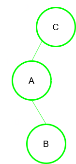
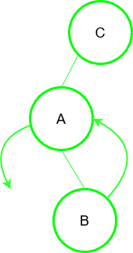
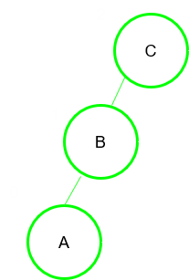
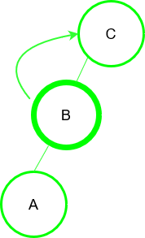
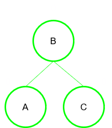
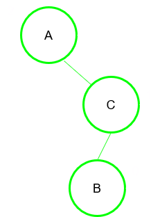
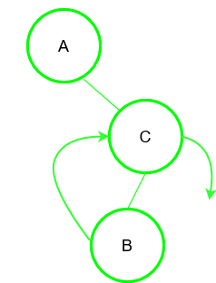
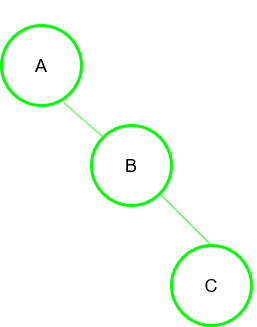
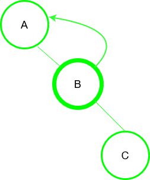
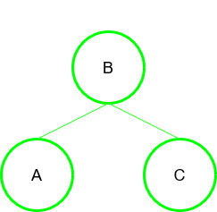

Advanced Data Structures
Well-balanced Trees
In computer science , an AVL tree (named after inventors Adelson-Velsky and Landis) is a self-balancing binary search tree. To balance the height of a BST we define a factor called as the "balance factor" The balance factor of a binary tree is the difference in heights of its two subtrees (hR -- hL). Balance factor = height of the left subtree-height of the right subtree The balance factor (bf) of a height balanced binar\ tree ma\ take on one of the values -1, 0, +1. Condition for balanced node of a BST: |bf| = |hl-hr| <=1.
To balance itself, an AVL tree may perform the following four kinds of rotations-
Fig. Balancing a BST via LL rotation
If a tree becomes unbalanced, when a node is inserted into the left subtree of the left subtree, then we call it a LL-imbalance , so let us call this rotation also as LL-rotation .
Fig. Balancing a BST via RR rotation
If a tree becomes unbalanced, when a node is inserted into the right subtree of the right subtree, then we call it a RR-imbalance , so let us call this rotation also as RR-rotation.
A left-right rotation is a combination of left rotation followed by right rotation.
| Figure | Discription |
|---|---|
|  | A node has been inserted into the right subtree of the left subtree. This makes C an unbalanced node. Thses scenerios cause AVL tree to perform left-right rotation. |
|  | We first perform the left rotation on the left subtree of C. This makes A, the left subtree of B. |
|  | Node C is still unbalanced, however now, it is because of the left subtree of the left subtree. |
|  | We shall now right-rotate the tree , making B the new root node of this subtree. C now because the right subtree of its own left subtree. |
|  | This tree is now balanced. |
Fig. Balancing a BST via LR rotation
The second type of double rotation is Right-Left Rotation. It is a combination of right rotation followed by left rotation.
| Figure | Discription |
|---|---|
|  | A node has been inserted into the left subtree of the right subtree. This makes A an unbalanced node with balance factor 2. |
|  | First, we perform the right rotation along C node, making C, the right subtree of its own left subtree B. Now, B becomes the right subtree of A. |
|  | Node A is still unbalanced because of the right subtree of its right subtree and requires a left rotation. |
|  | A left rotation is performed by making B the new root node of the subtree. A becomes the left subtree of its right subtree B. |
|  | This tree is now balanced. |
Fig. Balancing a BST via RL rotation